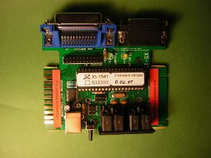
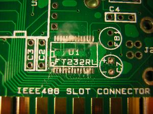
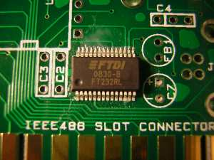
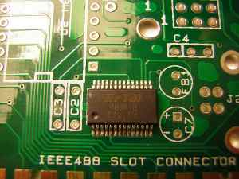
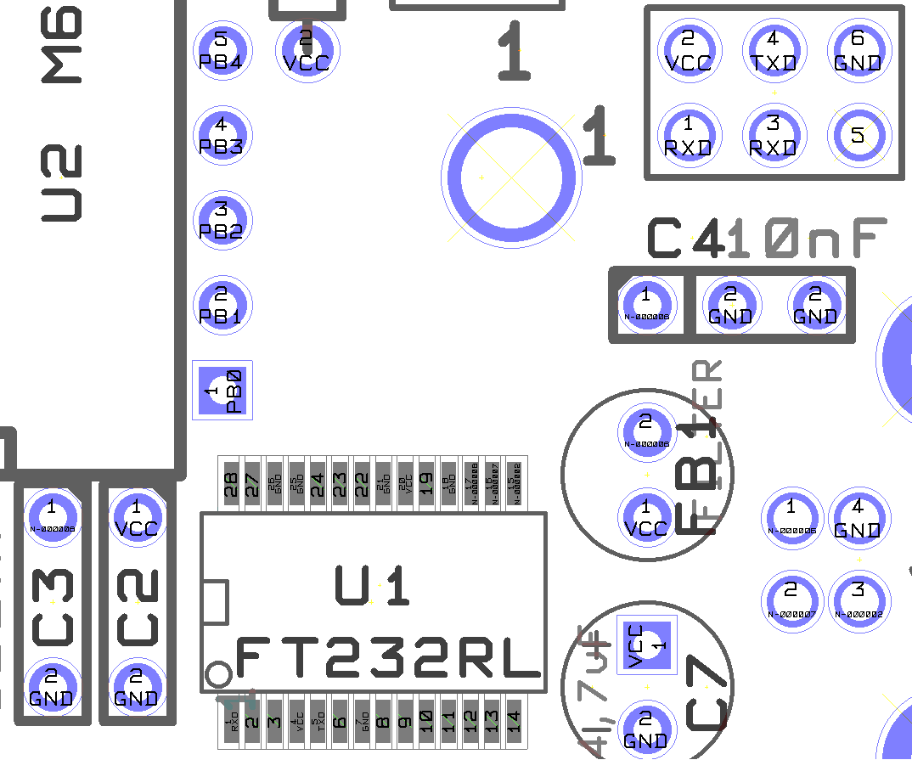

XS1541 Info
(C) 2019- André Fachat
This page describes the XS1541 interface that provides IEEE488 and IEC connectivity to a Commodore PET and/or C64 (or VIC20 or C128), using the PC as background storage using a Serial-over-USB connection.
I started this page as taken from Nils Eilers' excellent (German) building instructions as seen on the wayback machine of archive.org. I got the permission of Nils to do so by mail.
Please note that this device is basically still orphaned! I document this here only as I have one and use it. I'd rather have a zoomfloppy with more memory instead...
- 2019-08-31 Started this page as a copy from Nils Eilers' building instructions
Table of content
- Basic information on building and soldering
- Introduction to XS1541
- Building XS1541
- Soldering the SMD chip FT232RL
- Ceramic Capacitors C2, C3 and C4
- Ferrit Bead
- Elko C7
- USB socket
- Checking for short circuits
- Driver installation
- First connection check
- Rest of the discrete components
- Atmel socket
- Connector pin rows
- LEDs
- Reset switch
- 15 pin Sub-D connector
- 24 pin IEEE connector 'Centronics'
- IEC Din connector sockets
- Preparing and installing the Atmel
- Programming the Atmel
Please also look at the building thread in the forum64 (see links). If you have registered there you can also ask questions.
If you don't have many experiences soldering, it helps practicing. See some links below
In general, if you need more than 2 or 3 seconds per soldering joint, you're doing something wrong. And use the right tools - e.g. a small soldering iron for SMD parts.
The XS-1541 is an interface that connects older CBM drives with parallel IEEE bus like the CBM 8050 or CBM 4040, and the newer ones with serial IEC bus like the VC1541. 1571 or 1581 with a PC via a serial or USB interface.
A newer firmware allows to use the XS1541 as a disk drive for the Commodore PET or the Commodore computers with serial IEC bus like the C64, using the PC as a backing storage device.
{kind=link}
{kind=link}
Hint on board connectors
{kind=link}
Unfortunately the given libraries for the board edge connectors where buggy, the slow connector is too narrow. If you use plugs without the coding bridges the connector could cause short cuts.
A pragmatic solution is to use small pieces of wood that are being cut to size and glued to the size of the card edges.
Soldering the SMD chip FT232RL
1. Put soldering flux on the pads for the FT232 onto the board
{kind=link}
2. Position the chip: The chip as a circle mark that notes the position of pin 1. This circle must be in the direction of the circle as on the board.
{kind=link}
The chip has to be positioned exactly on the pads! If the legs of the pin overlap two pads a short circuit occurs.
2. Fix the chip with a finger, and solder a single(!) edge pin - just put the soldering iron on the pin and pad (this works as the pads as well as the pin is already coated in solder, maybe depending on your board manufacturer). Check the position of the chip. If the chip has moved into a bad position, it can easily be moved back by heating up that single soldered pin. Then solder the pin on the diagonally separated edge.
Don't solder more than 2-3 seconds in a row!
{kind=link}
3. Solder the chip: solder the other pins by moving the soldering iron across all the pins (note: this only works with pads and pins being pre-coated with solder.)
4. check the soldering work: check all the connections of the SMD chip against short circuits and connections to the actual signals. Do it now - later the FT232 it is much more difficult.
The pins are very close to each other, but can still be checked with a simple multi-meter.
There are 7 signals at 13 points to be checked.
{kind=link}
| Name | Probe point | Pin on FT232RL |
|---|---|---|
| VCC | SER P7 pin 2 | 4 and 20 |
| GND | SER P7 pin 6 | 7, 18, 21, 25, and 26 |
| TXD | SER P7 pin 4 | 5 |
| RXD | SER P7 pin 1 | 1 |
| USB D+ | J2 USB socket pin 3 | 15 |
| USB D- | J2 USB socket pin 2 | 16 |
| 3V3OUT | C3 pin 1 (top) | 17 |
If something went wrong and short circuits could be removed using soldering wick, the chip can be - carefully(!) - removed using a desoldering hot air fan (not a hair fan even though it looks like it!) The pads should be cleared from solder using soldering wick, then a new attempt can be started.
5. cleaning the board: remove all rests of flux from the board. I usually scrub the board with a toothbrush (only used for this purpose!) under flowing water, then dry it with some kitchen paper.
Ceramic Capacitors C2, C3 and C4
Ferrit Bead
Elko C7
USB socket
Checking for short circuits
Driver installation
First connection check
Rest of the discrete components
Atmel socket
Connector pin rows
LEDs
Reset switch
15 pin Sub-D connector
24 pin IEEE connector 'Centronics'
IEC Din connector sockets
Preparing and installing the Atmel
Programming the Atmel
Return to Homepage
Last modified: